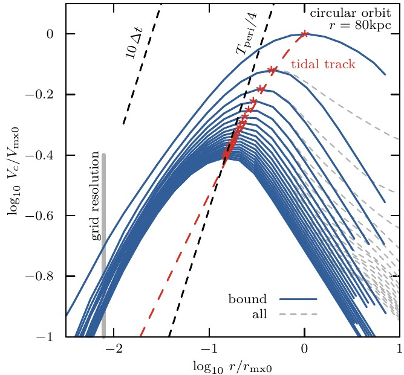
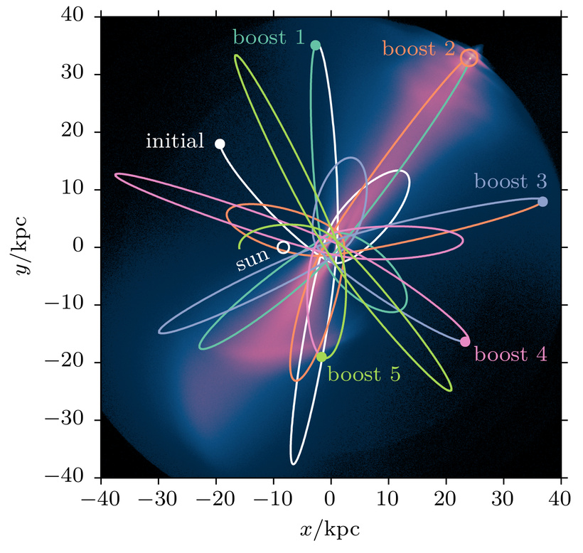
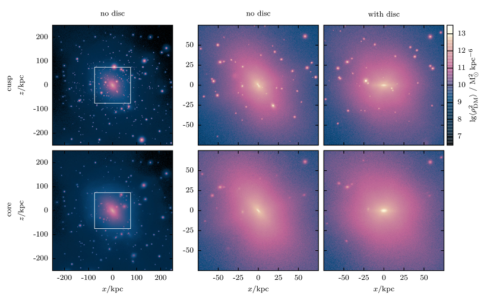
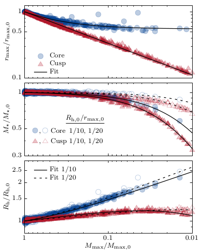
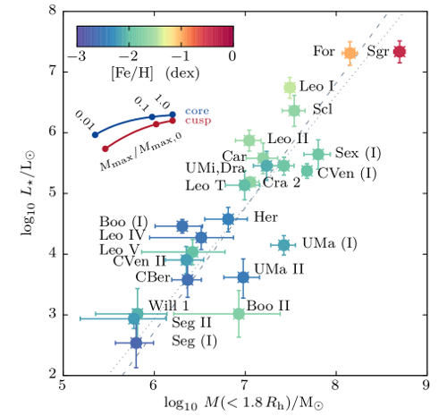
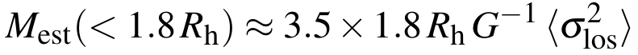
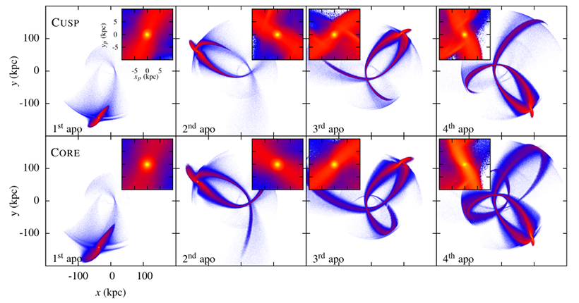

| home | astrophysics | adventures |
|
Asymptotic tidal remnants of cold dark matter subhalos with Julio Navarro 
Tidal mass losses reshape cold dark matter halos, leaving behind bound remnants whose characteristic densities are set by the mean density of the host at the pericentre of their respective orbit. The evolution to the final bound remnant state is essentially complete after ~5 orbits for nearly circular orbits, while reaching the same remnant requires ~25 and ~40 orbits for eccentric orbits with 1:5 and 1:20 pericentre-to-apocentre ratios, respectively. The density profile of tidal remnants is fully specified by the fraction of mass lost, and approaches an exponentially-truncated Navarro-Frenk-White profile in the case of heavy mass loss. Resolving tidal remnants requires excellent numerical resolution; poorly resolved subhalos have systematically lower characteristic densities and are more easily disrupted. Even simulations with excellent spatial and time resolution fail when the final remnant is resolved with fewer than 3000 particles. We derive a simple empirical model that describes the evolution of the mass and the density profile of the tidal remnant applicable to a wide range of orbital eccentricities and pericentric distances. Applied to the Milky Way, our results suggest that 108 - 1010 solar mass halos accreted ~10 Gyrs ago on 1:10 orbits with pericentric distance ~10 kpc should have been stripped to 0.1 - 1 per cent of their original mass. This implies that estimates of the survival and structure of such halos (the possible hosts of ultra-faint Milky Way satellites) based on direct cosmological simulations may be subject to substantial revision.
RE & Julio Navarro (2020): The asymptotic tidal remnants of cold dark matter subhalos paper: arXiv:2011.07077 Code to empirically model the tidal evolution of subhalos: github.com/rerrani/tipy
Tidal stripping and survival of cold dark matter subhaloes with Jorge Peñarrubia 
The clumpiness of dark matter on sub-kpc scales is highly sensitive to the tidal evolution and survival of subhaloes. In agreement with previous studies, we show that N-body realisations of cold dark matter subhaloes with centrally-divergent density cusps form artificial constant-density cores on the scale of the resolution limit of the simulation. These density cores drive the artificial tidal disruption of subhaloes. We run controlled simulations of the tidal evolution of a single subhalo where we repeatedly reconstruct the density cusp, preventing artificial disruption. This allows us to follow the evolution of the subhalo for arbitrarily large fractions of tidally stripped mass. Based on this numerical evidence in combination with simple dynamical arguments, we argue that cuspy dark matter subhaloes cannot be completely disrupted by smooth tidal fields. Modelling stars as collisionless tracers of the underlying potential, we furthermore study the tidal evolution of Milky Way dwarf spheroidal galaxies. Using a model of the Tucana III dwarf as an example, we show that tides can strip dwarf galaxies down to sub-solar luminosities. The remnant 'micro-galaxies' would appear as co-moving groups of metal-poor, low-mass stars of similar age, embedded in sub-kpc dark matter subhaloes.
RE & Jorge Peñarrubia (2020): Can tides disrupt cold dark matter subhaloes? paper: arXiv:1906.01642 Code to generate N-body models: github.com/rerrani/nbopy
Abundance of dark matter substructures with Jorge Peñarrubia, Chervin F.P. Laporte & Facundo Gómez
How many dark matter substructures get disrupted by the tidal field of the galactic disc? And how does the dark matter profile of subhaloes influence their chances for survival? To answer these questions, we use high-resolution N-body simulations of the dynamical evolution of dark matter substructures with orbits and structural parameters extracted from the Aquarius A-2 merger tree. Satellites are modelled as equilibrium N-body realizations of generalized Hernquist profiles with 2×106 particles and injected in the analytical evolving host potential at zinfall, defined by the peak of their mass evolution. We select all substructures with M200(zinfall) ≥ 108 solar masses and first pericentric distances rp < r200. Motivated by observations of Milky Way dwarf spheroidal galaxies, we also explore satellite models with cored dark matter profiles with a fixed core size rc = 0.8 as where as is the Hernquist scale radius. We find that models with cuspy satellites have twice as many surviving substructures at z=0 than their cored counterparts, and four times as many if we only consider those on orbits with rp ≤ 0.1 × r200. For a given profile, adding an evolving disc potential reduces the number of surviving substructures further by a factor of ≤ 2 for satellites on orbits that penetrate the disc ( rp ≤ 20 kpc).
RE, Jorge Peñarrubia, Chervin F.P. Laporte & Facundo Gómez (2017): The effect of a disc on the population of cuspy and cored dark matter substructures in Milky Way-like galaxies, arXiv:1608.01849  Tidal evolution of halo structural parameters
with Jorge Peñarrubia & Matthew Walker 
How do dwarf galaxies evolve during tidal stripping? Structural parameters of both their dark matter haloes and stellar populations can be parametrized as simple analytical functions which depend only on the total fraction of mass lost, but not on the specific orbit of the dwarf, or the
host potential.
The top panel shows rmax of the dwarf galaxy's DM halo, normalized by its value at infall rmax,0, as a function of the mass Mmax/Mmax,0 enclosed within rmax. The evolution of rmax is shown separately for cuspy (red triangles) and cored (blue circles) DM profiles. The central and bottom panel show the evolution of total stellar mass M★ and half-light radii Rh of stellar populations embedded inside the DM haloes with initial segregation of Rh,0/rmax,0 = 1/10 (filled symbols), 1/20 (open symbols). Note that rmax of cored dwarf galaxies decreases less rapidly during tidal stripping than for their cuspy counterparts, and half-light radii of stellar populations embedded in cored DM haloes expand during tidal stripping. RE, Jorge Peñarrubia & Matthew Walker (2018): Systematics in virial mass estimators for pressure-supported systems, arXiv:1805.00484
Unbiased mass estimates for pressure-supported systems
with Jorge Peñarrubia & Matthew Walker 
Mass estimators are a key tool to infer the dark matter content in pressure-supported systems
like dwarf spheroidal galaxies (dSphs). We constructed an estimator for enclosed masses based
on the virial theorem which is insensitive to anisotropy in the velocity dispersion and tailored
to yield masses with minimum uncertainty introduced by our ignorance on (i) the shape of
the inner halo profile, and (ii) how deeply the stellar component is embedded within the
halo:
 where by Rh we denote the projected half-light radius and by <σ2los> the luminosity-averaged squared line-of-sight velocity dispersion. Tests against controlled simulations show that this estimator provides unbiased enclosed masses with an accuracy of 10 per cent. The plot on the left shows enclosed masses for a selection of Milky Way dwarf galaxies. RE, Jorge Peñarrubia & Matthew Walker (2018): Systematics in virial mass estimators for pressure-supported systems, arXiv:1805.00484 ASCII table of the structural parameters of the dark matter haloes hosting the Milky Way dwarf spheroidal galaxies: github.com/rerrani/dwarfs
Constraining the progenitor dark matter profile using tidal streams
with Jorge Peñarrubia & Bepi Tormen
Can we use tidal streams to learn about the dark matter profile of their progenitor?
We used high-resolution N-body simulations to follow the formation and evolution of tidal streams associated to dwarf spheroidal galaxies (dSphs). The dSph models are embedded in dark matter (DM) haloes with either a centrally-divergent 'cusp', or an homogeneous-density 'core'. In agreement with previous studies, we find that as tides strip the galaxy the evolution of the half-light radius and the averaged velocity dispersion follows well-defined tracks that are mainly controlled by the amount of mass lost. Crucially, the evolutionary tracks behave differently depending on the shape of the DM profile: at a fixed remnant mass, dSphs embedded in cored haloes have larger sizes and higher velocity dispersions than their cuspy counterparts. The divergent evolution is particularly pronounced in galaxies whose stellar component is strongly segregated within their DM halo and becomes more disparate as the remnant mass decreases. Our analysis indicates that the DM profile plays an important role in defining the internal dynamics of tidal streams.
RE, Jorge Peñarrubia & Giuseppe Tormen (2015): Constraining the distribution of dark matter in dwarf spheroidal galaxies with stellar tidal streams, arXiv:1501.04968  |